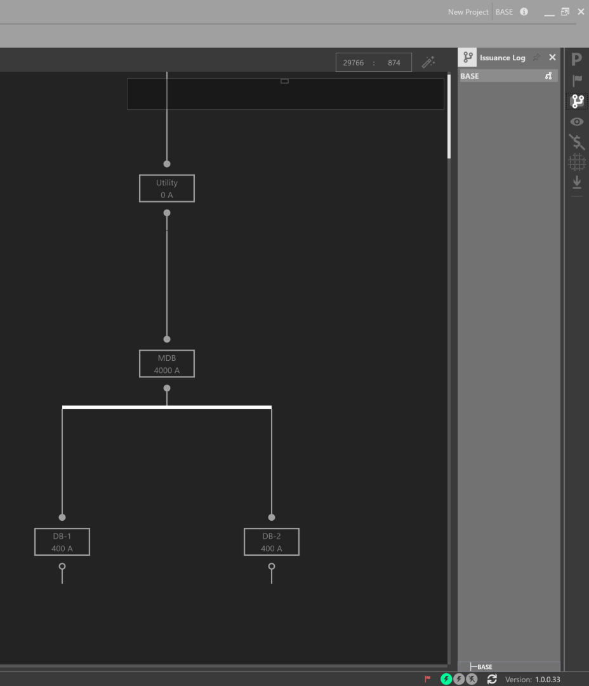
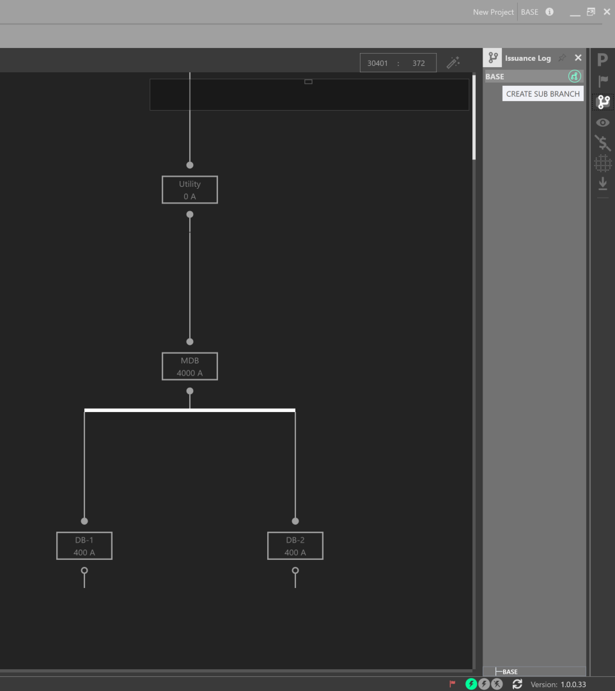
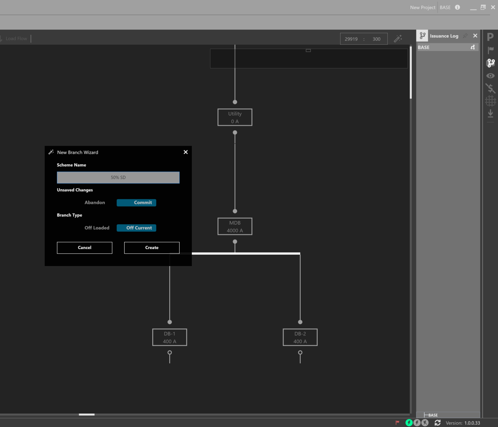
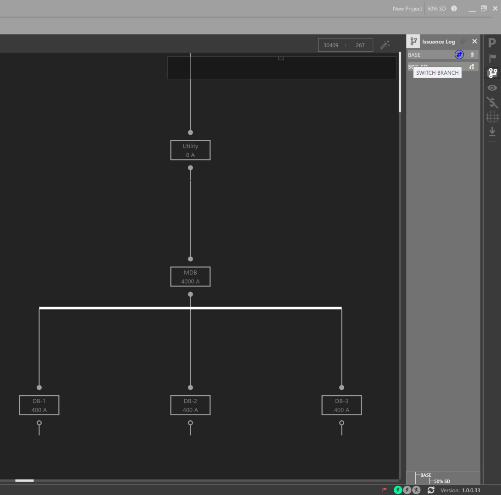
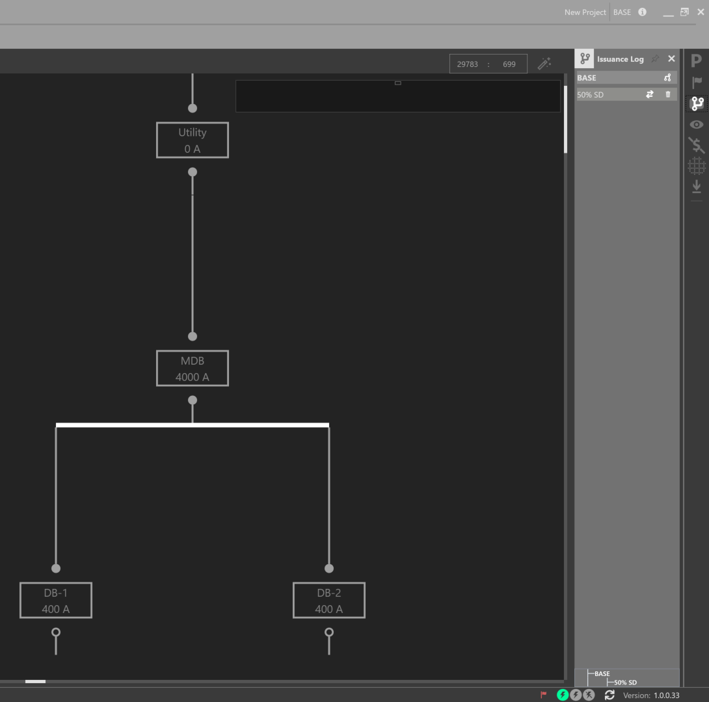

Branching¶
Designers are often tasked to study different options in order to determine the best option for the owner.
To create a branch, open the Issuance Log on the right explorer bar.
Click the branch symbol and give the branch a name. You can create a branch off the current model, or off of the last saved model. To branch off the current model, or what was initially loaded, Abandon the Unsaved Changes. To branch off the last saved model, Commit your Unsaved Changes.
 Swap between branches by clicking the arrow symbols. The current branch is noted in the top right navigation bar. A branching map is displayed at the bottom of the Issuance Log. Note the differences between the two One-Lines of each branch.
 In addition, designers can compare changes between branches, by using the Change Tracking workspace.